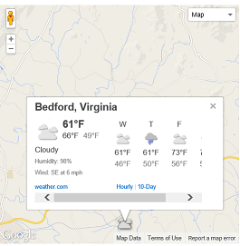
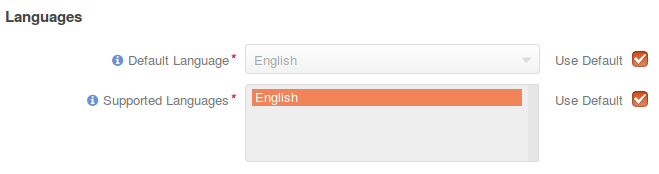
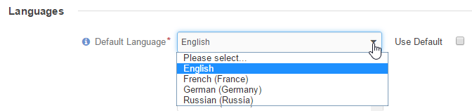
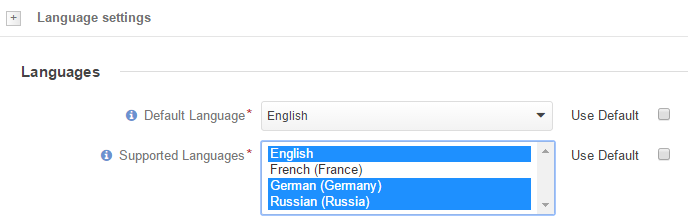
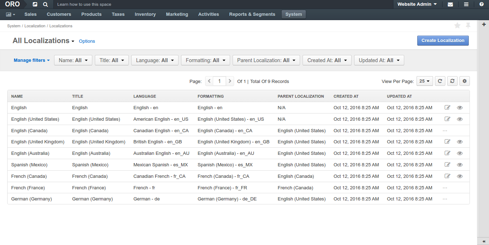

Managing Translations¶
System Configuration and Setup¶
Localization Configuration¶
To define the localization options (system locale, primary location, address formatting method, system timezone, calendar year settings, temperature and wind speed units on the map, enabled localizations and the default one):
Navigate to the localization settings:
Click System > Configuration in the main menu.
In the System Configuration menu to the left, expand General Setup and click Localization.
The following page opens:

Configure the following options:
Option Description Default Locale* Affects formatting of numbers, addresses, names, and dates. English Primary Location* and Format Address Per Country* Define the address formatting to be applied. If Format Address Per Country is enabled and the country-specific formatting is enabled for the instance, the address will be displayed in compliance with the rules specified for the country. For example, if the chosen country is Ukraine, the address will be displayed as follows:
ZIP code Ukraine City Street First and Last name
whereas, for the US it will be:
First and Last name Street name CITY NAME, STATE CODE, US, ZIP code Otherwise, the Primary Location formatting will be applied.
US First Quarter Starts On* Defines the quarter start date. January 1 Timezone* Defines the timezone to be applied for all the time settings defined in the instance. If the time-zone is changed all the time settings (e.g. due dates of tasks <./../../getting-started/common-actions/assign-tasks>), time of reminders, etc. will be changed correspondingly. UTC +02:00 Currency* Defines the default currency used in the system. There is no currency conversion in the system, so the setting basically defines the currency label applied to the monetary values defined in the system. US dollars In the Map Options, select the Temperature Unit and Wind Speed Unit for display of the weather on the map. The default values are Fahrenheit and miles per hour (MPH).
Select the supported localizations. Use the Ctrl and Shift keys to choose the languages from the list.
Select the default localization for the OroCommerce store frontend and management console. Localization affects formatting of numbers, addresses, names, and dates.
Languages Configuration¶
To define the default system language and additional supported languages:
Navigate to the language settings:
Click System > Configuration in the main menu.
In the System Configuration menu to the left, expand General Setup and click Language settings.
The following page opens:

Select the default language for the OroCommerce store frontend and management console.
Select the supported languages that can be used for translation of the OroCommerce content. Use the Ctrl and Shift keys to choose the languages from the list.

Settings are saved automatically.
Note
See languages section for available languages management and translation synchronization status.
Related Articles¶
Managing System Languages¶
Language is a core component of system loaclization and content translation in Oro applications that performs the following functions:
- Groups translations for all the text system elements available to the user (labels, UI, etc).
- Enables download (export) and upload (import) of the system elements identifiers and their translation to the target language. This enables you to customize translation and update it in the current instance only.
- Enables installation of the translation updates from the third party translation services.
To view all Languages, navigate to System > Localization > Languages in the main menu.
Preview:

Localization¶
Localization helps to bind the language and locale-specific formatting for smooth localization of the Oro system elements and messages visible to the user.
To enable easy inheritance from the parent or similar language, localizations may form groups organized as an ancestors tree, for example:
English
- English (UK)
- English (USA)
- English (Canada)
To view all Localizations, navigate to System > Localizations in the main menu.
Preview:
Translation¶
Language is a core component of system loaclization and content translation in Oro applications that performs the following functions:
- Groups translations for all the text system elements available to the user (labels, UI, etc).
- Enables download (export) and upload (import) of the system elements identifiers and their translation to the target language. This enables you to customize translation and update it in the current instance only.
- Enables installation of the translation updates from the third party translation services.